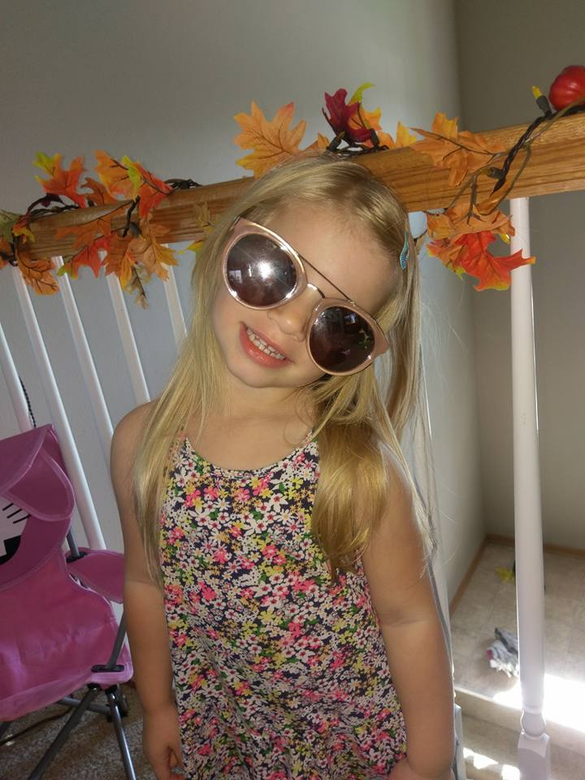
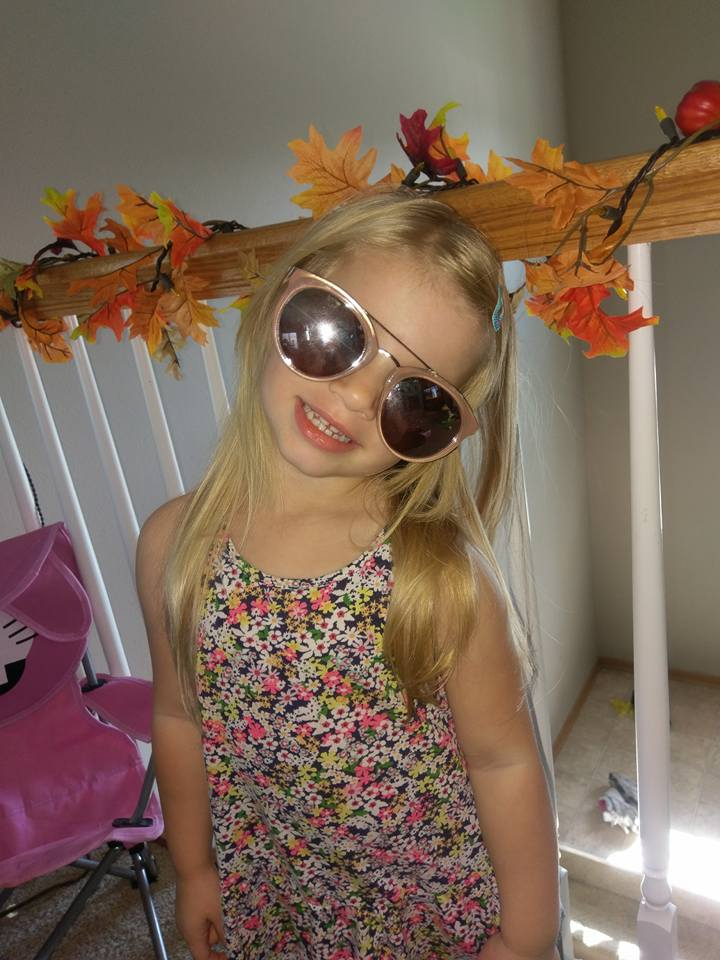

About
Emma Rae is a spunky little four year old with enough personality to go around. There is never a dull moment when she is in the room.
She loves to sing and dance, especially to soundtracks of Disney movies, and is always looking for new ways to be in the spotlight. Her favorite Disney princess is Cinderella although it has been known to change depending on which day you ask her on. The soundtrack of the moment is the Moana soundtrack but just a few months she was jammin’ to Elsa and “Let it go.”
The same goes with her favorite color. Today it was red, last week it was pink but if you’re wearing a pretty blue shirt, it will probably be blue.
Emma loves to play with her sisters, especially her sister Breanna. The two are rarely seen without each other. One of their favorite things to do together is build blanket forts where they play school or go to “work” or “camping.”
On chill days you can find Emma and her sisters watching movies or YouTube videos or playing games. She has very interesting taste in movies, some of her favorites being Beauty and the Beast, Moana,Sing, Zootopia, and all of the Sharknado movies.
If you need a good laugh, Emma is your go-to girl. Not only does she love attention, she loves to make people smile and the more laughs she gets, the more energy she has. Whether you need a joke, a hug, or a compliment, Emma knows exactly what you need to smile. Even if you’re not sure yourself what you need.